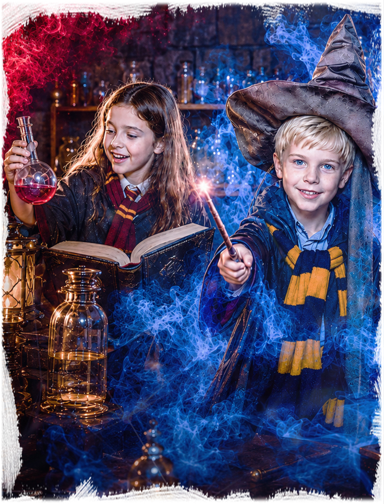
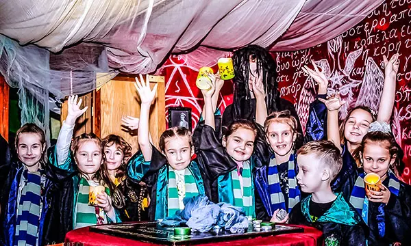

Приезжаете за 5 минутВстречаем гостей и помогаем с организацией.

Иркутск: Юбилейный, 17 и Баррикад, 33
Гарри Поттер
Детский день рождения в атмосфере школы волшебства: задания, зелья, тайники, костюмы, аниматор и чайная зона после игры. Формат подходит для детей от 7 лет и компаний друзей.
7+
4-20 детей
1 час игры
чайная зона
от 1500 руб./чел.
Что входит в праздник
Гарри Поттер - детский квест-приключение для дня рождения, где дети попадают в волшебную школу, ищут подсказки, готовят зелья и проходят задания командой.
Главная задача страницы - помочь родителям понять, как отметить день рождения ребенка: есть сценарий, ведущий, игровая зона, место для гостей и возможность продолжить праздник за столом.
Сценарий можно адаптировать под возраст детей, опыт команды и формат праздника: только игра, игра с чайной зоной или более широкий день рождения под ключ.
Почему удобно для дня рождения
- дети заняты понятной командной игрой;
- атмосфера волшебства, костюмы и декорации;
- аниматор помогает вести сюжет и задания;
- после квеста можно добавить чайную зону;
- родителям не нужно искать кафе отдельно.
Как пройдет игра
Проходите инструктажОбъясняем правила, безопасность и формат игры.
Играете с ведущимВедущий держит темп и помогает по сценарию.
Чайная зона по желаниюМожно продолжить праздник с тортом и поздравлением.
Запишись на праздник
1. Выберите дату и время, заполните форму
2. Укажите возраст, количество детей и чайную зону
3. Нажмите кнопку забронировать
Цены и условия
Основное, что нужно родителям перед бронированием: цена, возраст, количество детей, длительность, адрес, чайная зона и формат праздника.
От 1500 руб./чел. Итог зависит от даты, количества детей и дополнительных услуг.
Рекомендуемый возраст - 7+. Для младших школьников темп можно сделать спокойнее.
Обычно 4-20 детей. Для большого дня рождения состав лучше согласовать заранее.
Игра длится около 1 часа. После прохождения можно добавить чайную зону.
Иркутск: мк-н Юбилейный, 17; ул. Баррикад, 33.
Можно подготовить торт, поздравление, стол и время для общения после квеста.
Аниматор помогает детям двигаться по сюжету, объясняет задания и держит темп праздника.
Можно выбрать только квест или собрать праздник шире: игра, чайная зона и дополнительные активности.
Кому подойдет Гарри Поттер
Хороший выбор, если вы хотите
- день рождения с готовым сценарием;
- магическую тему без страшного хоррора;
- квест для младших школьников и друзей;
- праздник с игровым часом и чайной зоной;
- понятный формат, где детей ведет аниматор.
Формат особенно удобен для детей, которые любят волшебные истории, загадки, костюмы и командные задания. Здесь есть приключение, но без взрослого хоррора и жесткого напряжения.
Для родителей это готовый сценарий праздника: дети играют, получают эмоции, а после квеста можно спокойно поздравить именинника и угостить гостей.
Атмосфера праздника
Картинки и фото помогают заранее почувствовать настроение волшебного дня рождения без раскрытия всех заданий.




Схема проезда
Гарри Поттер в Иркутске проходит на двух площадках IQuest: мк-н Юбилейный, 17 и ул. Баррикад, 33. Ниже - карты, чтобы заранее понять, куда ехать.
Иркутск
мк-н Юбилейный, 17
Площадка IQuest для детского квеста и дня рождения в стиле Гарри Поттера.
Открыть в Яндекс Картах
Иркутск
ул. Баррикад, 33
Вторая площадка IQuest, где также можно провести квест и день рождения в стиле Гарри Поттера.
Открыть в Яндекс КартахВидео с праздника
Короткий ролик без спойлеров: атмосфера, реакции детей, декорации и настроение волшебного дня рождения.
Гарри Поттер на день рождения в Иркутске
Детский день рождения в стиле Гарри Поттера в Иркутске удобно проводить на площадках IQuest по адресам мк-н Юбилейный, 17 и ул. Баррикад, 33. Здесь есть квестовая часть, ведущий и возможность добавить чайную зону.
Страница рассчитана на запросы родителей: где отметить день рождения ребенка, какой формат выбрать для 7+, сколько гостей можно пригласить и как организовать праздник без отдельного кафе.
Перед бронированием лучше назвать дату, возраст детей, количество гостей и пожелания по столу. Администратор подскажет свободное время и подходящий сценарий.
Локальная информация
- Адреса: Иркутск, мк-н Юбилейный, 17; ул. Баррикад, 33.
- Телефон: 8 (901) 666-888-1.
- Рекомендуемый возраст - 7+.
- Формат: квест, аниматор и чайная зона по желанию.
- Подходит для дня рождения, класса и компании друзей.
Похожие детские форматы
Готовый праздникДень рождения под ключ в Иркутске
Игра, чайная зона, программа и помощь с организацией праздника.
АнгарскГарри Поттер в АнгарскеВерсия волшебного сценария на площадке IQuest в Ангарске.
Похожий сценарийКосмический корабль в ИркутскеФантастическая миссия для детей от 7 лет.
Похожий сценарийЗамок Дракулы в ИркутскеМистический детский квест с загадками и декорациями.
Все вариантыДетские квесты в ИркутскеСравните площадки, форматы и адреса IQuest в городе.
Выбор городаДетские праздники в ИркутскеПосмотрите все детские форматы и сценарии для Иркутска.
Мистика для детейЗамок ДракулыАтмосферный сценарий для детей постарше и подростков.
Гарри Поттер или другой праздник
Если вы выбираете формат дня рождения, сравните возраст, активность, адрес и то, насколько сценарий подходит для праздника.
| Формат | Возраст | Гости | Настроение | Адрес | Для дня рождения |
|---|---|---|---|---|---|
| Гарри Поттер | 7+ | 4-20 | волшебство | Юбилейный, 17; Баррикад, 33 | да |
| Под ключ | 7+ | 10+ | полный праздник | Иркутск | да |
| Лазертаг | 7+ | 4-20 | активная игра | Иркутск | да |
| Нерф | 7+ | 4-20 | динамика | Иркутск | да |
Что важно родителям
Лучше обсудить заранее
- возраст детей и количество гостей;
- нужна ли чайная зона после квеста;
- будет ли торт, свечи и поздравление;
- нужны ли дополнительные активности;
- есть ли ограничения по времени или составу детей.
Если праздник нужен без спешки, лучше сразу закладывать время на игру и чайную зону. Так дети успевают пройти квест, поздравить именинника и спокойно пообщаться после приключения.
Для класса или большой компании администратор поможет подобрать формат, чтобы всем хватило места, ролей и внимания ведущего.
Что обычно нравится детям
Детям нравится искать подсказки, открывать секреты и чувствовать себя учениками волшебной школы.
Сценарий помогает детям действовать вместе, обсуждать решения и радоваться общему результату.
После игры удобно перейти к торту, поздравлению и спокойной части дня рождения.
Частые вопросы
Где проходит Гарри Поттер в Иркутске?
На площадках IQuest по адресам мк-н Юбилейный, 17 и ул. Баррикад, 33.
С какого возраста подходит сценарий?
Рекомендуемый возраст - 7+. Для младших детей темп можно сделать мягче.
Можно ли отметить день рождения?
Да. Гарри Поттер подходит для дня рождения: к игре можно добавить чайную зону, торт и поздравление.
Нужно ли родителям быть рядом?
Родители могут обсудить формат с администратором заранее. Ведущий помогает детям во время сценария.
Выбрать время для Гарри Поттера
Позвоните или оставьте бронь на сайте: администратор подскажет свободное время, формат чайной зоны и программу под возраст детей.
Позвонить 8 (901) 666-888-1